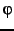
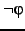
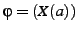
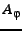

We can also benchmark LTL formula modeling with CadenceSMV and NuSMV. To check whether a LTL formula

is satisfiable, we model check
against a universal SMV model. For example, if
, we provide the following input to NuSMV:MODULE main
VAR
a : boolean;
b : boolean;
c : boolean;
LTLSPEC !(X(a=1 ))
FAIRNESS
1
(The ``FAIRNESS'' line varies with versions of NuSMV. The CadenceSMV model is very similar.) SMV negates the specification, , symbolically compiles into 
, and conjoins with the universal model. If the automaton is not empty, then SMV finds a fair path, which satisfies the formula . In this way, SMV acts as both a symbolic compiler and a search engine.